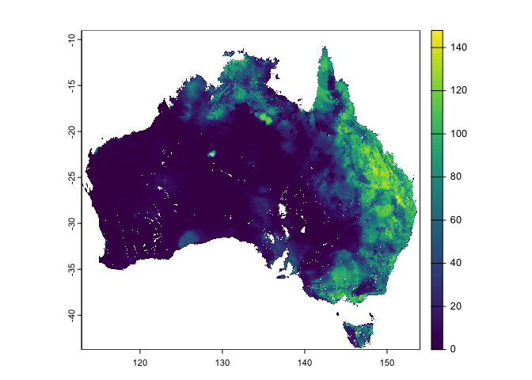

The goal of {nert} is to provide access to Australian TERN (Terrestrial Ecosystem Research Network) data in your R session.
Installation
You can install the development version of {nert} from GitHub with:
if (!require("pak")) {
install.packages("pak")
}
pak::pak("AAGI-AUS/nert")Example: reading a COG as a spatial object
This is a basic example which shows you how you can fetch one day’s data from the SMIPS data (currently the only supported data set in TERN) and visualise it:
library(nert)
#>
#> Attaching package: 'nert'
#> The following object is masked from 'package:graphics':
#>
#> plot
#> The following object is masked from 'package:base':
#>
#> plot
r <- read_smips(day = "2024-01-01")
plot(r)
Extract Values Given Lat/Lon Values
Extract Soil Moisture for Corrigin and Merriden, WA and Tamworth, NSW given latitude and longitude values for each.
library(terra)
#> terra 1.7.78
df <- structure(
list(
location = c("Corrigin", "Merredin", "Tamworth"),
x = c(117.87, 118.28, 150.84),
y = c(-32.33, -31.48, -31.07)
),
row.names = c(NA, -3L),
class = "data.frame"
)
cog_df <- extract(x = r, y = df[, c("x", "y")], xy = TRUE)
cog_df <- cbind(df$location, cog_df)
names(cog_df) <- c("location", "ID", "smips_totalbucket_mm_20240101", "x", "y")
cog_df
#> location ID smips_totalbucket_mm_20240101 x y
#> 1 Corrigin 1 0.06715473 117.8688 -32.33328
#> 2 Merredin 2 0.22716530 118.2787 -31.48353
#> 3 Tamworth 3 93.44989014 150.8408 -31.07365Citing {nert}
To cite nert:
citation("nert")
#> To cite package 'nert' in publications use:
#>
#> Sparks A, Pipattungsakul W, Edson R, Rogers S, Moldovan M (2024).
#> _nert: An API Client for TERN Data_. R package version 0.0.0.9000,
#> https://github.com/AAGI-AUS/nert, <https://aagi-aus.github.io/nert/>.
#>
#> A BibTeX entry for LaTeX users is
#>
#> @Manual{,
#> title = {nert: An API Client for TERN Data},
#> author = {Adam Sparks and Wasin Pipattungsakul and Russell Edson and Sam Rogers and Max Moldovan},
#> year = {2024},
#> note = {R package version 0.0.0.9000, https://github.com/AAGI-AUS/nert},
#> url = {https://aagi-aus.github.io/nert/},
#> }